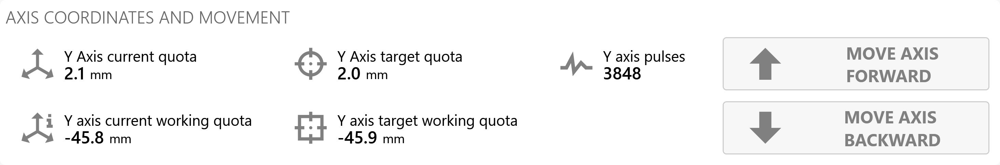
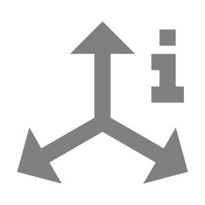
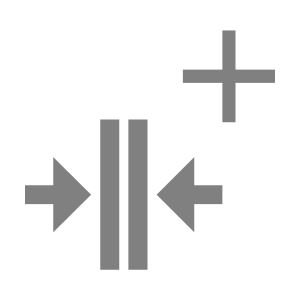
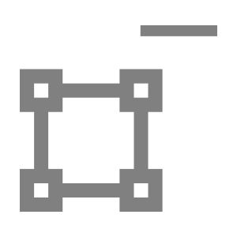
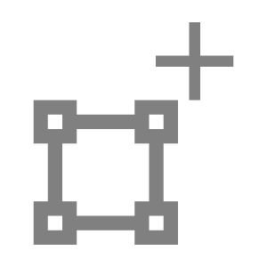

Select an axis, monitor coordinates, use held movement commands and adjust base or operating-mode parameters.
Axes list
On the left side are listed configured axes under their machine groups. Select a component to display its calibration parameters and observe live coordinates.
NOTE
The list and available operating modes depend on the machine configuration.
WARNING!
Changing a parameter can send a value to the PLC immediately. The movement buttons can move the selected axis while held. Check the selected component, the machine state and the entered values before using any control.
Axis coordinates and movement
The upper-right panel shows the selected axis's quotas and pulses. It is possible to move forward/backward the selected axis.

Current axis quota Shows the current position of the selected axis.
Target axis quota Shows the target position commanded for the selected axis.
Axis pulses Shows the current pulse count for the selected axis.

Current working quota Shows the current position in working coordinates.
Target working quota Shows the target position in working coordinates.
The user can move forward/backward the selected axis.
Move Axis Forward Moves the selected axis forward while the button is held. Releasing it ends the movement command.
Move Axis Backward Moves the selected axis backward while the button is held. Releasing it ends the movement command.
Base parameters
Contains the base parameters of the selected axis, independently of the operating-mode of its group.
Tool Position Shows the tool position returned by the PLC.
Limits Active Turns the base axis limits on or off.
Negative Limit Sets the base limit at the negative end of the selected axis range.

Positive Limit Sets the base limit at the positive end of the selected axis range.
Read Axis Quota Copies the current axis quota into the adjacent negative or positive limit field. Each limit has its own button.
Axis Offset Sets the offset used for the selected axis.
Recalculate Offset Calculates the axis offset from the current pulse count and axis development.
Axis Development Selects a standard development value or accepts a value typed into the editable drop-down.
Tool Offset Sets the tool offset for the selected axis.
Operating mode parameters
Parameters depending on the operating mode of the selected group. Choose an available Operating mode to read that mode's values. Available modes depend on the selected group.
Operating mode selector Choose an available mode for the selected machine group to load that mode’s calibration values.
Limits Active Turns working limits on or off for the selected operating mode.
Negative Working Limit Sets the negative working limit for the selected operating mode.
Positive Working Limit Sets the positive working limit for the selected operating mode.
Read Axis Working Quota Copies the current working quota into the adjacent working limit or working envelope field. Each field has its own button.
Out of Envelope Active Turns the out-of-envelope setting on or off for the selected operating mode.

Negative Working Envelope Sets the negative working envelope value for the selected operating mode.

Positive Working Envelope Sets the positive working envelope value for the selected operating mode.